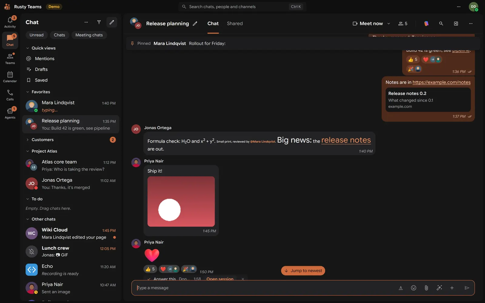
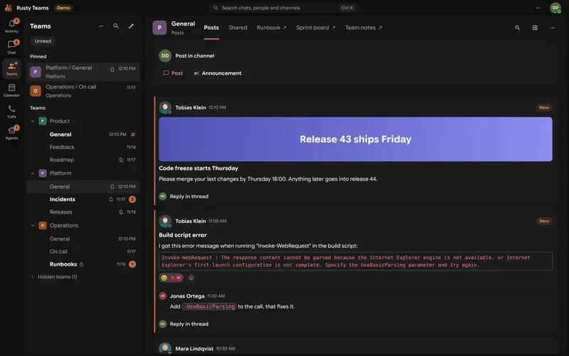
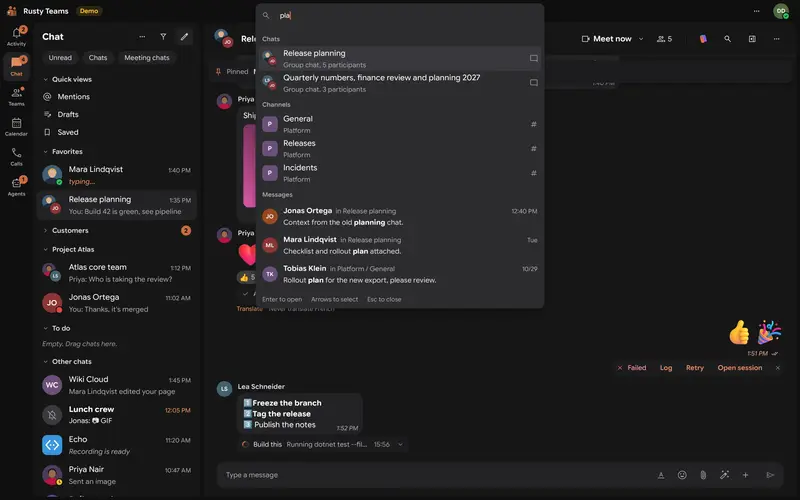
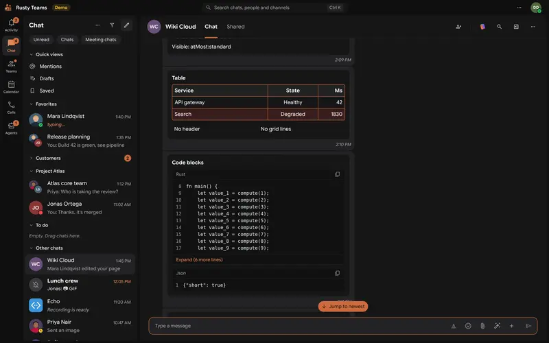
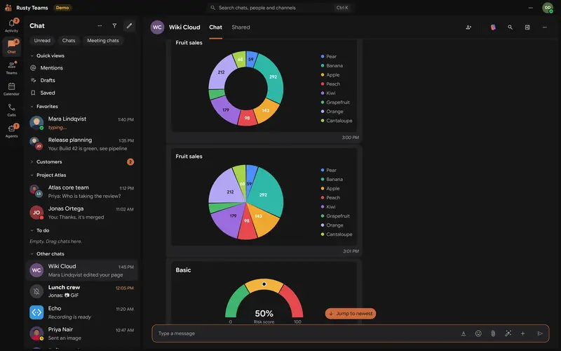
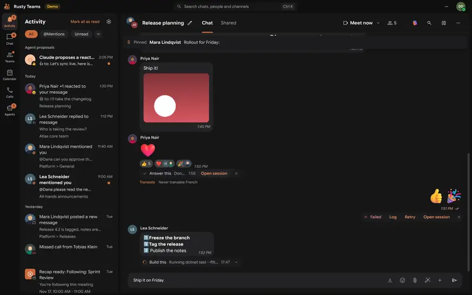
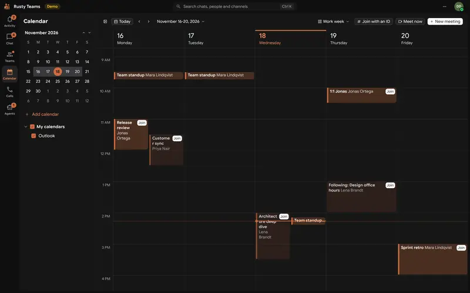
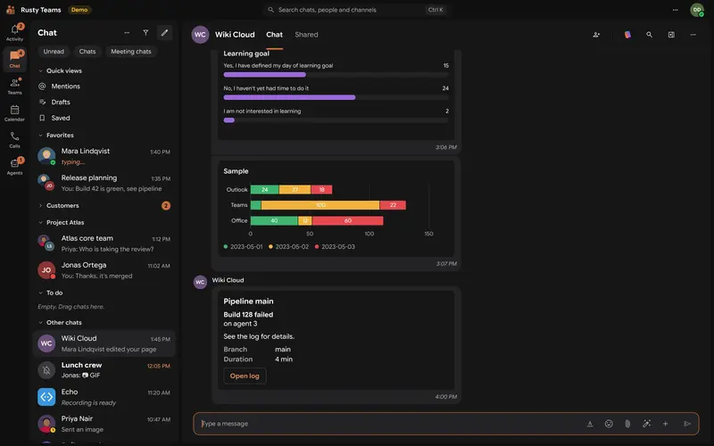
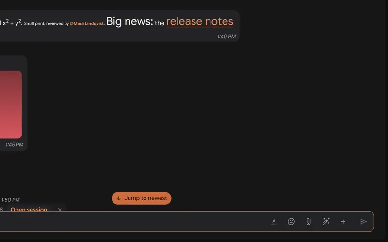

Platform01
Windows
Main target
Sign-in runs through an embedded WebView2, so single sign-on with your Windows account usually just works.
Get for WindowsRendered on the GPU. Starts from a local cache. Works in company tenants with no admin approval, because it uses the Teams web app your account can already use.
Windows · Linux · macOS
All releases and checksumsWindows · Linux · macOS · Free and open source · MIT

No app registration, no admin consent. It runs on the Teams web app your account is already allowed to use.
Renders from a local SQLite cache before the network answers. No spinner.
Signs in through a real Teams web page. Tokens are never written to disk.
A realtime socket pushes every change: messages, typing, presence, read receipts.
A full-text index over your chats, with a Ctrl+K switcher.
Native WebRTC audio, video and screen sharing, with incoming call toasts and meeting join.

Full size ↗
Full size ↗
Full size ↗
Full size ↗Download the build for your system from GitHub releases. The installed Windows and Linux builds look for new releases and ask before they update.
Option 2 · Standalone
Every release ships a Windows build, Linux AppImage, deb, rpm and tar.gz, and a macOS .app for Apple Silicon (macOS 14+).
Main target
Sign-in runs through an embedded WebView2, so single sign-on with your Windows account usually just works.
Get for WindowsAppImage, deb, rpm, tar.gz
Uses your Chromium- or Firefox-based browser in the background. Offers to install itself and adds a menu entry.
Get AppImageOther files for Linux
Apple Silicon .app, macOS 14+
Starts your default Chromium- or Firefox-based browser on its own. Screen share uses the system dialog.
Get for macOSRelease
Versioned builds for every platform live on GitHub releases, with the changelog next to them.
Build from source
See the quick start for the Linux toolchain.
git clone https://github.com/danieldaeschle/rusty-teams.git
cd rusty-teams
cargo run --release -p app
A local MCP server, off by default. Agents draft replies; you press Send. They never send.
Read more
Outlook plus optional Google Calendar, merged by iCal UID and Teams join URL.
Read more
Adaptive Cards like Teams: tables, code, badges, charts, pickers and task dialogs.
Read more
Rich text, Markdown as you type, emoji, GIFs, scheduled send, drafts that survive a restart.
Read moreFree and open source
Download Rusty Teams and sign in with your work account. No admin approval needed.
Download latest